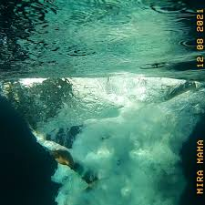

Cancionero


Mira Mamá
WOS

Yo me vi largar las palabras, como un aguacero
Pensamientos vienen muchos, solo algunos son sincero'
¿Qué voy a hacer si nunca me basé en los cero'?
Tengo un nudo en la garganta y en la panza un agujero
La agonía del enfermo, el amor en el verano
Su calor en el invierno
Pero la veo y caigo en la trampa de sentir que hay algo eterno
"¿Cómo estás?" Le contesto que no sé llorar
Por eso dibujo lágrimas
Ya se humedeció toda la página, así que imaginá
Al menos no soy una máquina
¿Será que no quiero que esto muera y que se olviden de mí?
Si te soy sincero
¿Será que no quiero darme cuenta que los que les creí
No eran tan sincero'?
Mirá mamá, estoy arriba
Y te juro que no hay nada más que la vida
Mirame acá, estoy arriba
Y te juro que no hay nada más que la vida
Mirá mamá, 'toy arriba
Y te juro que no hay nada más que la vida
Mirá mamá, estoy arriba
Y te juro que no hay nada más
Todo se deshace y quiero irme
Cuando no puedo pisar firme en el mismo lugar que antes
Pero todo son instante' y escapar no sirve
Para buscar ser libre nunca se hace tarde
Y ahora entendí
Que no todo está bien pero está bien así
Una temporada de poner énfasis
En entender el lado oscuro de este éxtasis
Y no es que sea frágil
Es que tengo la nostalgia con el "Sí" muy fácil
Sé que es difícil 'tar al lado mío
Les da náuseas el vaivén de lo que vivo
Te preguntabas por qué estando mojado me río
Es que me empapa este rocío compuesto por recuerdos de crío
En un banco rimando con frío
Amando a los mío', tomando y tentando al olvido
Y ahora dudo si eso tuyo era amor de verdad
O buscabas un muñeco pa' mostrar
Y no funcionó conmigo
No soy un placebo diseñado pa' engañar tu vacío
¿Será que no quiero que esto muera y que se olviden de mí?
Si te soy sincero
¿Será que no quiero darme cuenta que los que les creí
No eran tan sincero'?
Mirá mamá, estoy arriba
Y te juro que no hay nada más que la vida
Mirame acá, estoy arriba
Y te juro que no hay nada más que la vida
Mirá mamá, 'toy arriba
Y te juro que no hay nada más que la vida
Mirá mamá, estoy arriba
Y te juro que no hay nada más, eh
Mirá mamá, 'toy arriba
Y te juro que no hay nada más que la vida
Mira mamá, estoy arriba
Y te juro que no hay nada más
Inicio